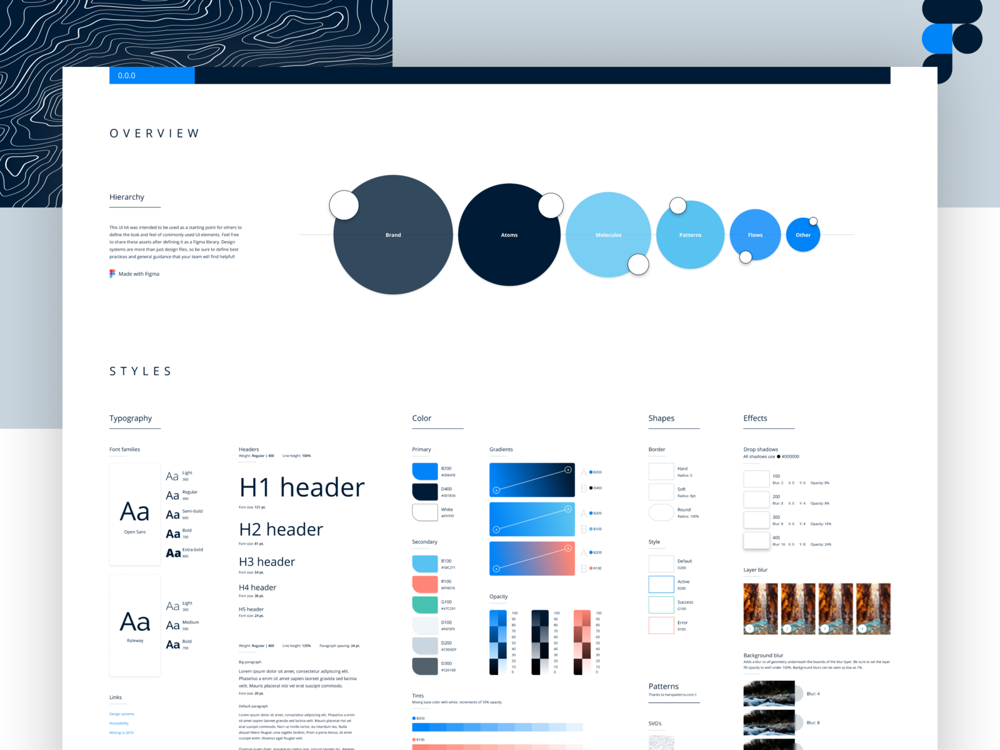

My UX Skills
User Research

As we all know, User research is an essential part of the design process that UX designers shouldn’t overlook. I enjoy the User research process as we use it to understand the user’s needs, behaviors, experience, and motivations through various qualitative and quantitative methods to solve user’s problems.
UI Style Guide
I like to creatively visualize brands by incorporating tone and voice, designing typography, layouts, color palettes, UI elements, logos. Creating cohesion throughout guidelines, involved design, clearly spacing and positioning instructions, design notes.
Wireframing & Prototyping

Wireframe presents the information displayed on the page, outlines the structure and layout of the page, and conveys the overall direction and description of the user interface. Prototyping allows the user to test a digital product’s interface and interactions, and this level of functionality can be useful during the usability testing of an application.
My Works
Durham non profit housing

By redesigning the Durham non profit housing website, we will be able qa11 ``to: Make the application process easier for users, improve access to information on non profit housing, help DRNPHC better reach their company vision.
Canada Revenue Website Redesign

The CRA website redesign makes it more visually appealing and more accessible by creating custom iconography and navigation bars that help users efficiently identify where they want to go.
Lilia Mobile Application
 Design Lilia application allows users to access personalized plant care advice from trusted expert sources, all with no cost to the user.
Design Lilia application allows users to access personalized plant care advice from trusted expert sources, all with no cost to the user.